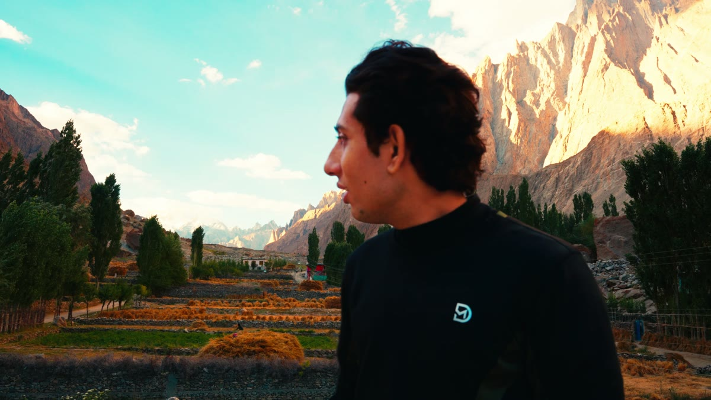
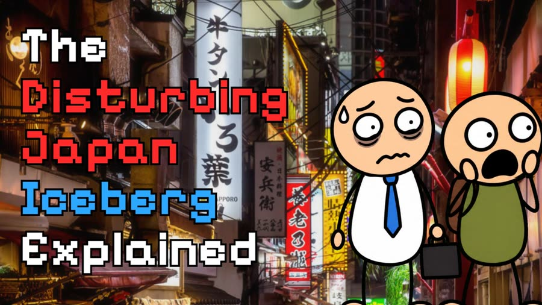
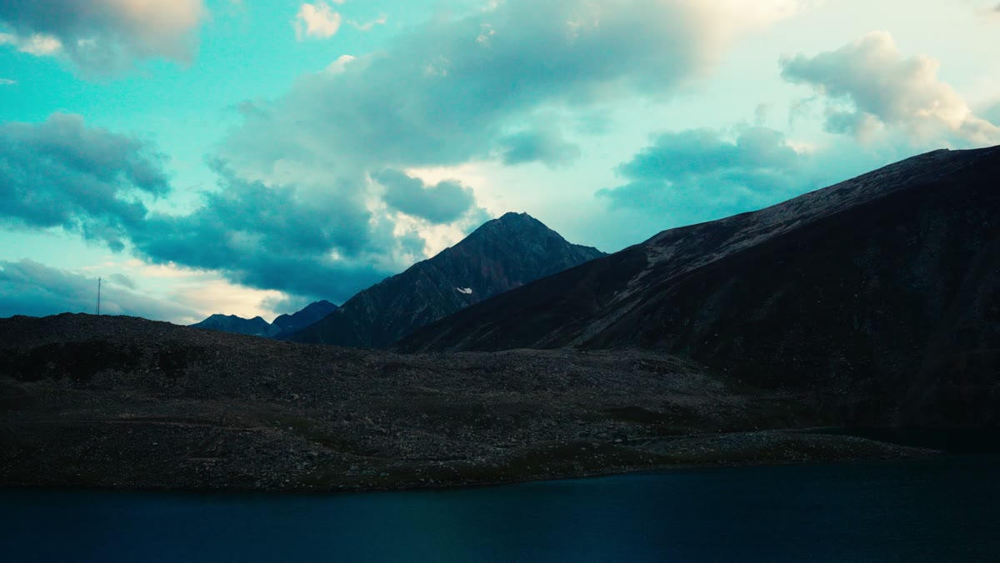
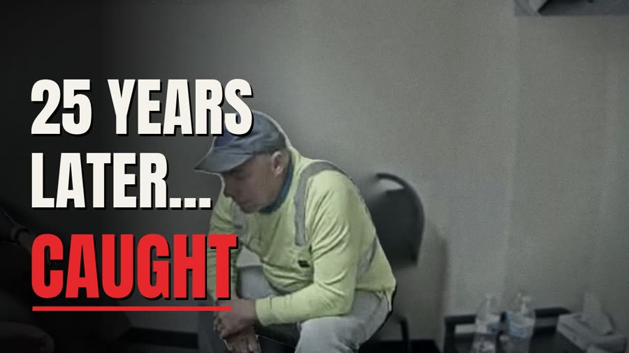
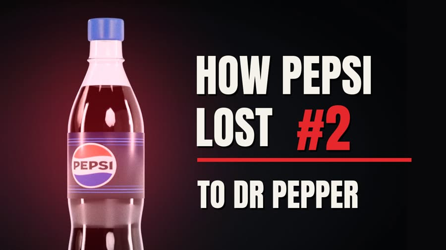
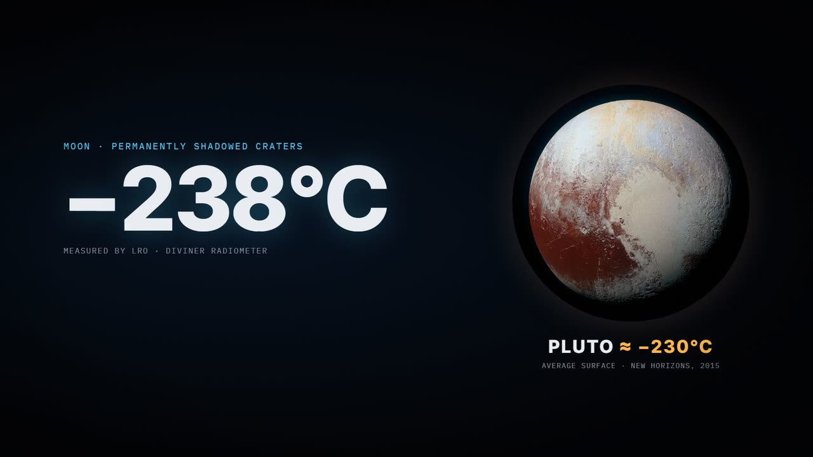
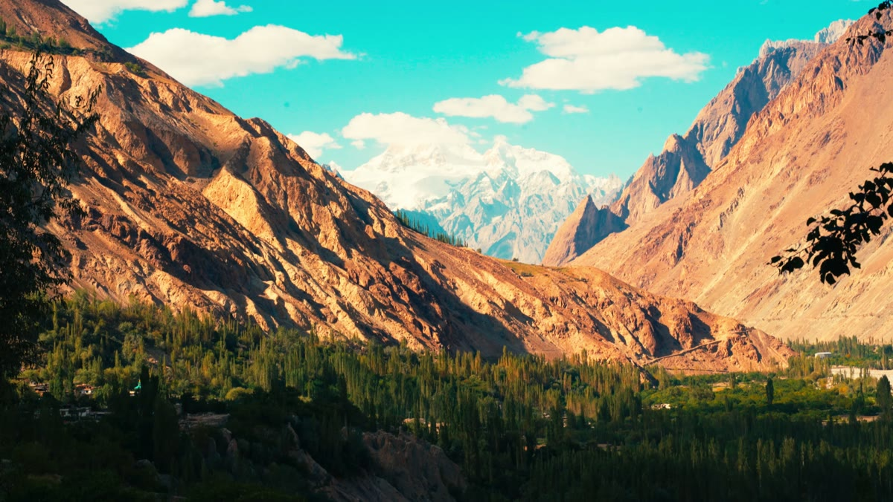
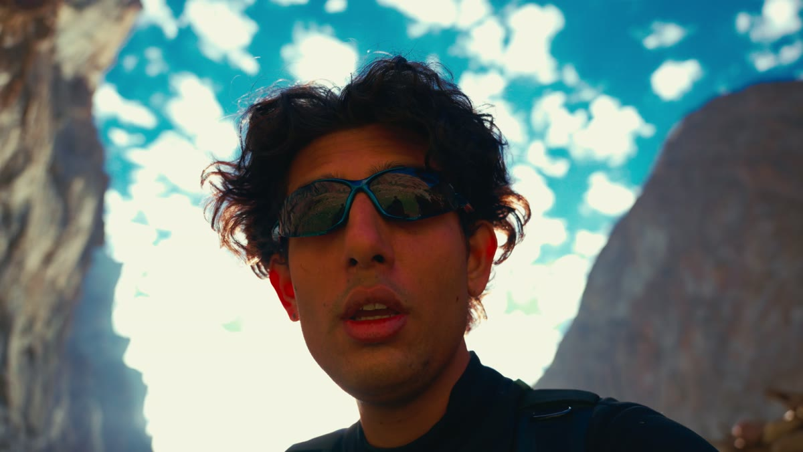
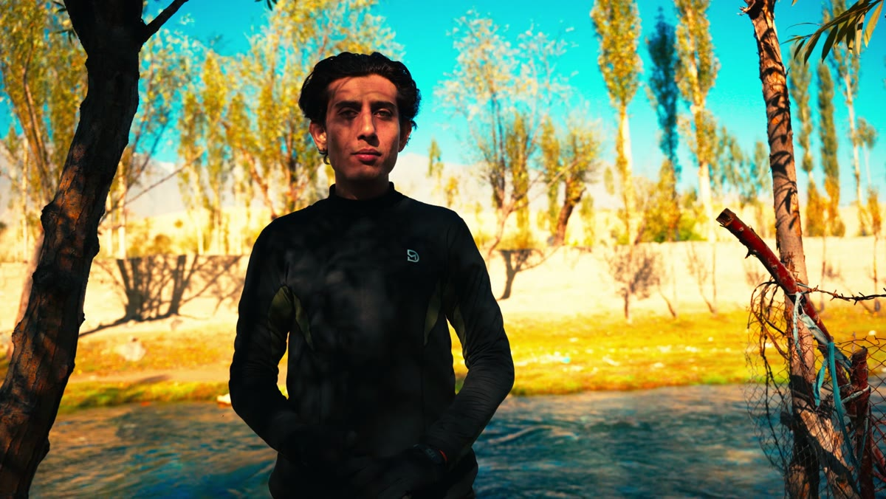

Stories on screen. Miles on foot.
I'm a filmmaker, documentary video editor, 3D artist and sound designer, and I've worked with channels and brands around the world. Away from the screen I'm an athlete: running, football, horse riding, calisthenics and trekking in the mountains of Pakistan.




Things I've made on screen.
 YouTube▶
YouTube▶10 Mistakes That Cost More Than Anyone Imagined

Garbo: The Spy Who Fooled Hitler
 YouTube▶
YouTube▶The Race to Build AI Nobody Can Stop

Killer Caught After 25 Years

Cathedral Canyon: The 911 Call

Pepsi's Price Problem

The Moon's Hidden Water
Japan iceberg explainer

Pepsi Number Fever, 1992
Edit, 3D, sound.
I've edited and produced for YouTube channels and brands across the US, UK, Europe and Asia, in business, true crime, history, science, fitness and tech.
Filmmaking and editing
Story structure, pacing and visual storytelling for long-form YouTube documentaries, shorts and brand films, shot on a Sony A7 IV.
3D art and motion graphics
Cinematic 3D scenes and reconstructions in Blender, maps, data graphics and typography in After Effects.
Sound design and music
Sound design built scene by scene, original scores, and clean voice mixes that keep viewers watching.
Built outdoors.
Sport is the other half of my life. The discipline that gets me up a mountain is the same one that gets a film finished.
 YouTube▶
YouTube▶48 Hours in Arang Kel, Kashmir

Gilgit-Baltistan

Cold desert, Skardu

River crossing


Above the clouds

The quiet part
